- Compartilhando variáveis com o mundo v2
- Process Monitor e o monopólio malcriado
- Silly regex trick
- Desconstruindo IOCCC
- Funky do-while
- Os diferentes erros na linguagem C
- Configurando seus projetos no Visual Studio (Multi-threaded Debug DLL /MT,
- Códigos de entrevista - o ponteiro nulo
- Conversor de Houaiss para Babylon - parte 1
- Quando o ponteiro nulo não é inválido
# Compartilhando variáveis com o mundo v2
Caloni, 2008-02-01 <computer> [up] [copy]Nota de desempenho: esse artigo finaliza (finalmente) a republicação de todos os artigos do antigo blogue. Isso quer dizer que a partir de agora eu sou obrigado a trabalhar, e, se quiser manter meu ritmo atual, vou ter que fazer mais do que cinco cliques do mouse.
Como todas as coisas que fazemos e pensamos depois, descobrimos que sempre existe uma outra maneira de fazer a mesma coisa. Se é melhor ou não, pode ser uma questão de gosto, estética, objetivos de vida, etc. Com a implementação das variáveis mapeadas globais não foi diferente. Bem, é isso que se espera fazer com código experimental: experimentos. E deu no que deu: SharedVar versão 2.0 alpha Enterprise Edition.
Quando comentei no final do artigo anterior que existem pessoas que só conseguem gerar código dentro de uma classe, não estava brincando. Existem linguagens, inclusive, que suportam apenas o paradigma de orientação a objetos, e levam isso muito a sério. C++ com certeza não é uma dessas linguagens, o que quer dizer que você tem a liberdade e a responsabilidade de tomar o melhor caminho para determinado problema.
Nessa segunda solução do nosso programa alocador de variáveis globais, pra variar, vamos utilizar uma classe. E pra entrar de vez no mundo POO vamos utilizar de quebra tratamento de erro orientado a exceções. Como vamos notar, aplicadas adequadamente, essas duas características da linguagem conseguirão um código mais simples de entender, embora não se possa dizer o mesmo da implementação "under the hood".
/** Classe helper para as nossas funções de alocação de variáveis
compartilhadas com o mundo. */
template<typename T>
class SharedVar
{
public:
// se conseguir, parabéns; senão, retorna BUM!
SharedVar(PCTSTR varName)
{
m_memPointer = 0;
m_memHandle = AllocSharedVariable(&m_memPointer, varName);
if( ! m_memHandle || ! m_memPointer )
throw GetLastError();
}
// libera recursos alocados para a variável
~SharedVar()
{
FreeSharedVariable(m_memHandle, m_memPointer);
}
T& operator * ()
{
return *m_memPointer;
}
private:
// não vamos nos preocupar com isso agora
SharedVar(const SharedVar& obj);
SharedVar& operator = (const SharedVar& obj);
T* m_memPointer;
HANDLE m_memHandle;
};
Como podemos notar, em programação "nada se cria, tudo se reutiliza". Reutilização é boa quando podemos acrescentar características adicionais ao código sem deturpar seu objetivo original. E isso é bom.
Note que nossa classe tenta fazer as coisas logo no construtor, já que seu único objetivo é representar uma variável da memória cachê. Se ela não for bem-sucedida em sua missão, ela explode, porque não há nada que ela possa fazer para garantir a integridade do objeto sendo criado e ela não tem como saber qual o melhor tratamento de erro para o usuário da classe. Geralmente o melhor - ou pelo menos o mais adequado - é o tratamento que o usuário dá ao seu código, porque o usuário da classe é que deve saber o contexto de execução do seu código.
Bem, como o código agora está em uma classe e o erro é baseado em exceção, o código cliente muda um pouco:
/** Exemplo de como usar as funções de alocação de memória compartilhada
AllocSharedVariable, OpenSharedVariable e FreeSharedVariable.
*/
int _tmain(int argc, PTSTR argv[])
{
try
{
// passou algum parâmetro: lê a variável compartilhada e exibe
if( argc > 1 )
{
system("pause");
// array de 100 TCHARs
SharedVar<TCHAR [100]> sharedVar(_T(SHARED_VAR));
_tprintf(_T("Frase secreta: \'%s\'\n"), *sharedVar);
_tprintf(_T("Pressione <enter> para retornar..."));
getchar();
}
else // não passou parâmetro: escreve na variável
// compartilhada e chama nova instância
{
// array de 100 TCHARs
SharedVar<TCHAR [100]> sharedVar(_T(SHARED_VAR));
PTSTR cmd = new TCHAR[ _tcslen(argv[0]) + 10 ];
_tcscpy(cmd, _T("\""));
_tcscat(cmd, argv[0]);
_tcscat(cmd, _T("\" 2"));
_tcscpy(*sharedVar,
_T("Vassora de sa, vassora de su, vassora de tuturuturutu!"));
_tsystem(cmd);
delete [] cmd;
}
}
catch(DWORD err)
{
_tprintf(_T("Erro %08X.\n"), err);
}
return 0;
}
Existem duas mudanças significativas: 1. a variável sozinha já representa a memória compartilhada; 2. o tratamento de erro agora é centralizado em apenas um ponto. Se pra melhor ou pior, eu não sei. Tratamento de exceções e classes são duas "modernisses" que podem ou não se encaixar em um projeto de desenvolvimento. Tudo vai depender de tudo. Por isso a melhor saída depende de como será a entrada.
# Process Monitor e o monopólio malcriado
Caloni, 2008-02-05 <computer> [up] [copy]Uma das primeiras regras que aprendemos para manter a integridade do Windows é utilizá-lo somente com a conta de usuários restritos, o que evitaria, por exemplo, que um programa mal-intencionado instale um serviço ou driver, que teriam acesso às partes íntimas do sistema operacional.
Essa é uma regra básica, mas não é fácil de cumpri-la. Só quem já tentou fazer isso sabe do que estou falando. Inúmeros programas mal-escritos vão tentar, de uma hora pra outra, acessar áreas do sistema de arquivos e registro que não possuem acesso, pois agora estão rodando em uma conta mais restrita. E não são programas de administração ou manutenção do sistema. Estou falando de programas de escritório e jogos. Aqui vai um singelo exemplo que tive que lidar esse fim-de-semana.
Primeiramente, quero deixar bem claro que jogamos Monopoly por mais ou menos dois meses sem ter qualquer tipo de problema, em três computadores diferentes. Até que resolvemos usar uma conta mais restrita. Foi o bastante para o programinha inocente começar a chiar.
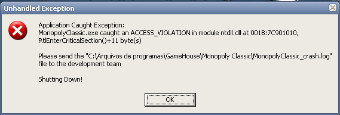Mau garoto. Bons tempos em que quando um jogo travava o máximo que tínhamos que fazer era apertar um botão.
Para encontrar problemas desse tipo, sempre uso o Process Monitor, que tem virado minha ferramenta básica para muitas coisas. Para os que não conhecem, o Process Monitor é uma ferramenta de auditoria de operações no sistema operacional, ou seja, tudo que alguém ler e escrever em arquivos e no registro será logado.
Sua função é mostrar tudo, absolutamente tudo que o sistema está fazendo em um determinado espaço no tempo. Isso pode ser ruim por um lado, já que será bem difícil encontrar alguma informação útil no meio de tanto lixo que pode ser gerado em um log de poucos momentos. Para ter uma idéia do que eu estou falando, tente abrir o Procmon sem qualquer filtro e deixá-lo rodando por 30 segundos sem fazer nada. No meu sistema isso deu aproximadamente 20 mil linhas de eventos de log. Nada mau para um sistema ocioso.
É por isso que ele vem "de fábrica" já com uma série de filtros, que evitam lotar o log de eventos com informação sempre gerada pelo sistema, mas quase sempre inútil. Além dos filtros-padrão, podemos inserir nossos próprios filtros. É isso que faremos aqui para pegar o monopólio malcriado (sem trocadilhos).
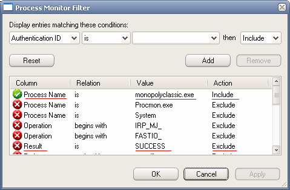Como podemos ver, iremos mostrar em nosso log todos os eventos cujo nome do processo seja monopolyclassic.exe (o nosso amigo faltoso) e iremos excluir do log qualquer evento cujo resultado tenha sido sucesso (se deu certo, provavelmente não é um erro).
Executamos novamente o jogo, dessa vez com o Process Monitor capturando todos seus movimentos.
Agora, uma pequena ressalva: eu estou cansado de ver isso, mas para quem nunca viu, pode não ser tão óbvio. Como eu disse no início do artigo, programas mal-escritos costumam tentar acessar áreas do sistema que não são acessíveis para usuários comuns. Isso quer dizer que, se o problema que está acontecendo com o jogo tem a ver com essa peculiaridade, a primeira coisa a procurar é por erros de acesso negado.
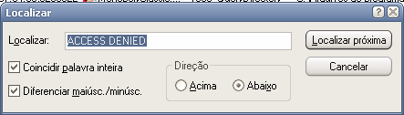 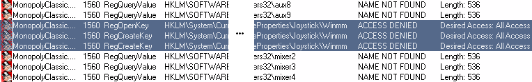A primeira busca retorna uma chave no registro referente às propriedades de joystick. Como não estou usando joysticks, podemos ignorar este erro por enquanto e passar adiante.
MonopolyClassic.exe CreateFile C:\Documents and ...\TikGames\Monopoly NAME COLLISION MonopolyClassic.exe CreateFile C:\Arquivos de programas\GameHouse\Monopoly Classic\Monopoly.log ACCESS DENIED MonopolyClassic.exe QueryOpen C:\Arquivos de programas\GameHouse\Monopoly Classic\DBGHELP.DLL NAME NOT FOUND MonopolyClassic.exe RegOpenKey HKLM\Software\Microsoft\...\DBGHELP.DLL NAME NOT FOUND
O próximo erro diz respeito a uma tentativa de acesso ao arquivo Monopoly.log localizado no diretório de instalação do jogo, o que já é mais sugestivo. Podemos fazer um pequeno teste alterando o acesso desse arquivo.
C:\Arquivos de programas\GameHouse\Monopoly Classic>cacls Monopoly.log
C:\Arquivos de programas\GameHouse\Monopoly Classic\Monopoly.log BUILTIN\Usuários:R
BUILTIN\Administradores:F
AUTORIDADE NT\SYSTEM:F
MITY\Caloni:F
C:\Arquivos de programas\GameHouse\Monopoly Classic>
Como podemos ver, o que é muito natural, um arquivo dentro da pasta de instalação de programas permite acesso de somente leitura para usuários comuns a seus arquivos, inclusive o Monopoly.log. Para fazer o teste, podemos simplesmente adicionar controle total a apenas esse arquivo, e rodar novamente o jogo.
>cacls Monopoly.log /E /G Usuários:F
arquivo processado: C:\Arquivos de programas\GameHouse\Monopoly Classic\Monopoly.log
C:\Arquivos de programas\GameHouse\Monopoly Classic>cacls Monopoly.log
C:\Arquivos de programas\GameHouse\Monopoly Classic\Monopoly.log BUILTIN\Usuários:F
BUILTIN\Administradores:F
AUTORIDADE NT\SYSTEM:F
MITY\Caloni:F
C:\Arquivos de programas\GameHouse\Monopoly Classic>start monopolyclassic.exe
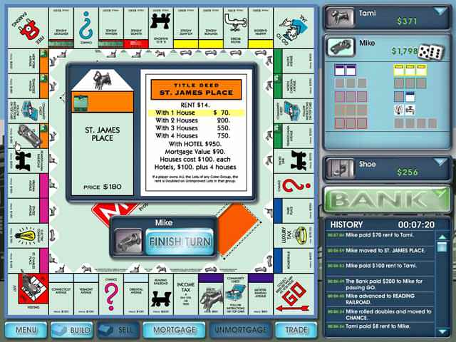
Ora essa, estou conseguindo rodar o jogo! Isso quer dizer que nosso único problema, o acesso a esse arquivo, foi resolvido. Sabendo que um arquivo de log provavelmente não será executado por nenhuma conta privilegiada, podemos deixá-lo com acesso irrestrito para todos.
Para ter certeza que isso resolveu o problema, uma segunda auditoria de execução executada pelo Process Monitor pode nos revelar mais detalhes.
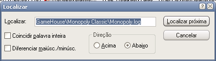MonopolyClassic.exe QueryStandardInformationFile C:\Documents ...\Monopoly\save.gcf SUCCESS MonopolyClassic.exe ReadFile C:\Documents ...\Monopoly\save.gcf SUCCESS MonopolyClassic.exe CloseFile C:\Documents ...\Monopoly\save.gcf SUCCESS MonopolyClassic.exe CreateFile C:\Arquivos de programas\GameHouse\Monopoly Classic\Monopoly.log SUCCESS MonopolyClassic.exe CreateFile C:\Arquivos de programas\GameHouse\Monopoly Classic SUCCESS MonopolyClassic.exe CloseFile C:\Arquivos de programas\GameHouse\Monopoly Classic SUCCESS MonopolyClassic.exe WriteFile C:\Arquivos de programas\GameHouse\Monopoly Classic\Monopoly.log SUCCESS
Moral da história: se algum dia você vier a escrever um programa inocente, deixe que pessoas inocentes consigam utilizá-lo.
# Silly regex trick
Caloni, 2008-02-07 <computer> <english> [up] [copy]I know what you going to think about this one: "silly trick". That's why I just put it in the title. Anyway, that is something I use everyday, so I thought it might be useful to who cares about productivity.
Let's say you have to manage a big solution in Visual Studio made of more than 30 projects, and needs to rebuild all them. Suddenly, something goes wrong. The question is: how to discover, in a heartbeat, what project has failed?
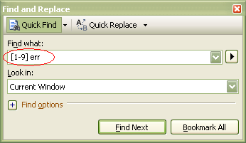Note that you need to enable "Regular Expressions" option in the Find Dialog (not shown here).
What I'm saying inside this regex is "find the first number different from zero followed by a space and the letters err". This lead us to the first project who has at least one error:
------ Build started: Project: FailedProj, Configuration: Release Win32 ------ Compiling... stdafx.cpp Compiling... FailedProj.cpp FailedProj.cpp(2477) : error C2039: 'Blablabla' : is not a member of 'IBlabla' Build log was saved at "file://c:Projects...ReleaseBuildLog.htm" FailedProj - 2 error(s), 0 warning(s)
If you think "what about when a project generates more than 9 errors? the regex wouldn't be able to catch this case", well, you're right. Anyway, that's the quicker form to search for the unsuccessful project inside a big solution. A more complex yet complete regex would be:
[1-9][0-9]* err
For me, the first version is enough. It is faster to type, simpler to catch and solves my problem. I hope it can solve yours =)
# Desconstruindo IOCCC
Caloni, 2008-02-11 <computer> [up] [copy]Como alguns devem saber, e outros não (ou não deveriam), existe uma competição internacional para escolher quem escreve o código em C mais ofuscado. Isso mesmo. O evento se chama The International Obfuscated C Code Contest (IOCCC resumidamente) e costuma premiar anualmente os melhores "do ramo" com a chamada "menção desonrosa".
Acredito que a real valia de um campeonato desse porte é fazer as pessoas pensarem mais a fundo sobre as regras da linguagem. Isso faz com que erros mais obscuros que encontramos no dia-a-dia se tornem mais fáceis. Claro que ninguém deveria programar como os caras desse torneio, mas a título de aprendizagem, é uma grande aula sobre C.
Publico aqui a interpretação do primeiro programa a ganhar a tal menção desonrosa, em 1984. Se trata do batidíssimo "Hello World", só que um pouco compactado e confuso. Vejamos o fonte original:
int i;main(){for(;i["]<i;++i){--i;}"];read('-'-'-',i+++"hell\
o, world!\n",'/'/'/'));}read(j,i,p){write(j/p+p,i---j,i/i);}
Aparentemente o fonte é bem confuso, apesar de podermos já ver a famosa string escondida no meio do código. Depois de aplicar uma formatação mais adequada para nossa tarefa de desfazer o feito, o resultado é bem mais legível:
int i;
main()
{
for( ; i["] < i; ++i ){--i;}"]; read('-' - '-', i++ + "hello, world!\n", '/' / '/') )
;
}
read(j, i, p)
{
write(j / p + p, i-- - j, i / i);
}
Algumas construções são óbvias. Vamos então partir para as não-tão-óbvias.
int i;
Como toda variável global inteira, é inicializada com zero. Logo, a linha acima é equivalente a "int i =0".
main() { }
read() { }
Aos programadores C++ desavisados de plantão, em C o valor de retorno padrão é int, e, caso não seja retornado nada, isso não constitui um erro, porém o comportamento é não-definido. Nada de mal, porém, pode ocorrer, a não ser o retorno de lixo da pilha.
for( ; <censurado>; <censurado> )
;
Outra coisa óbvia, mas não tanto, é um laço for sem corpo. Ele possui apenas um ponto-e-vírgula, que identifica uma instrução nula. Não faz nada no corpo, mas pode fazer coisas interessantes no cabeçalho, ou seja, na inicialização, no teste e no incremento. Como podemos ver, a inicialização também está vazia, contendo esse laço apenas o teste e o incremento. No teste temos a seguinte comparação:
i["] < i; ++i ){--i;}"]
Ora, sabendo que a variável "i" inicialmente tem o valor zero, o que estamos vendo aqui é a mesma coisa que
0["] < i; ++i ){--i;}"]
E uma vez que aprendemos algumas peculiaridades sobre o operador de subscrito em C, sabemos que a linha acima é equivalente a essa linha abaixo:
"] < i; ++i ){--i;}"[0]
Agora ficou mais fácil de entender. Se trocarmos a nossa string literal por uma variável (forma mais usual), temos um acesso típico a um dos caracteres de uma string:
char* str = "] < i; ++i ){--i;}";
str[0];
Só precisamos lembrar que a variável i é que define a posição, e por ser uma variável, pode mudar durante a execução:
int i = 0;
char* str = "] < i; ++i ){--i;}";
str[i];
Pois bem. Agora sabemos que o laço irá ser testado pelo menos uma vez, o que quer dizer que a parte do incremento vai executar pelo menos uma vez. E essa parte é a seguinte:
read('-' - '-', i++ + "hello, world!\n", '/' / '/')
Uma chamada de função. Nada mais simples. Podemos anular algumas coisas por aqui. Por exemplo, se subtraímos um número dele mesmo encontramos zero, e se dividirmos um número por ele mesmo o resultado é um:
'-' - '-' == 0 '/' / '/' == 1
Lembre-se de que um caractere em C é um tipo inteiro, e portanto, pode fazer parte de cálculos matemáticos. Depois dessa simplificação, temos
read(0, i++ + "hello, world!\n", 1)
Agora você deveria estar se perguntando (se ainda não encontrou a resposta) do porquê de eu ter dividido os três sinais de + dessa forma. Existem duas opções para a divisão:
i++ + "hello, world!\n" /* ou */ i+ ++"hello, world"\n" /* ?? */
A primeira forma é a resposta correta devido à regra de precedência (deferida pela gramática). Antes os operadores unários, depois os binários. Dessa forma, um "i+" não quer dizer nada, mas "i++" é um operando com um operador unário.
Voltando à expressão, imagino que a essa altura você já deva ter decifrado que i++ + "hello, world!\n" é o mesmo que:
char* str = "hello, world"\n"; &str[i++];
Ou seja, obtemos o endereço do primeiro caractere da string e incrementamos nossa variável "i" que, como sabemos, é usada no teste do laço for. Na primeira vez, testamos se o primeiro caractere de "] < i; ++i ){--i;}" é diferente de zero. Na segunda iteração, portanto, iremos testar se o segundo caractere será zero. Sabendo disso, podemos deduzir que o laço irá correr por todos os caracteres da string de teste, até encontrar o zero finalizador de string. Ao mesmo tempo, iremos enviar para a função read sempre o endereço do i'ésimo caractere da string "hello, world!\n", pois essa string também é indexada pela variável "i".
Isso quer dizer que nosso laço irá terminar exatamente no final de ambas as strings! (Note, que para comparar as strings, usamos as strings originais do programa, sem melhorar a formatação).
"] < i ; + + i ) { - - i ; }"
1 2 3 4 5 6 7 8 9 0 1 2 3 4
"h e l l o , w o r l d ! \n"
Também devemos lembrar que o caractere de controle '\n' é representado apenas por um byte, apesar de no fonte parecer dois.
Em um passado bem longínquo, o padrão ANSI C não existia, e outras funções dominavam o ambiente UNIX. Muitas dessas funções foram adaptadas, e outras completamente copiadas para a formação do padrão. No entanto, ainda que o padrão não tenha colocado algumas funções clássicas, elas continuaram sendo usadas e suportadas. Um bom exemplo disso são as funções read e write, que, apesar de não estarem no padrão, estão no livro de K&R, no capítulo sobre fluxos (streams) em UNIX, provando que são bem populares.
Dentro desse mundo paralelo, existem identificadores de fluxos padrões para a entrada e a saída padrão. Melhor ainda, esses identificadores são inteiros que estão especificados da seguinte maneira (tirado da referência GNU da linguagem C, meu grifo):
There are also symbolic constants defined in unistd.h for the file descriptors belonging to the standard streams stdin, stdout, and stderr; see Standard Streams.
STDIN_FILENO
This macro has value 0, which is the file descriptor for standard input.
STDOUT_FILENO
This macro has value 1, which is the file descriptor for standard output.
STDERR_FILENO
This macro has value 2, which is the file descriptor for standard error output.
Agora podemos voltar ao fonte. Vejamos como é implementada a função read, chamada dentro do laço for. Como todos sabem, se uma função já é definida em sua própria unidade, não haverá uma busca por referências externas, o que quer dizer que a implementação padrão de read não atrapalha a implementação local.
read(j, i, p)
{
write(j / p + p, i-- - j, i / i);
}
Ótimo. A função read chama a função (essa sim, padrão) write. Sabemos que tanto o primeiro quanto o último parâmetro da função será sempre constante no laço for:
read(0, i++ + "hello, world!\n", 1)
O que quer dizer que o primeiro argumento passado para write será sempre o mesmo:
j == 0; p == 1; j / p + p == 1;
Além da constante óbvia passada no último argumento:
i / i = 1; /* independente de i */
Isso quer dizer que a chamada para write pode ser resumida para:
write(1, i-- - j, 1);
O decremento da variável "i" (dentro de read) nunca é usado, uma vez que é uma variável local. E subtrair "j" é inócuo, uma vez que o valor de "j" será sempre zero. Logo, o argumento do meio é sempre o parâmetro do meio, por mais idiota que isso possa parecer =)
write(1, i, 1);
Pronto, já temos condições de interpretar o significado dessa chamada à write. Como já vimos, o número 1 identifica a saída padrão, o que quer dizer que estamos escrevendo algo na saída padrão. Esse algo é o parâmetro "i" que, como vimos, é o endereço do i'ésimo caractere da string "hello, word!\n". O último argumento é o número de bytes a serem escritos, que será sempre um. O que quer dizer que o laço em for chamada a função read strlen("hello, world!\n") vezes passando o endereço do próximo caractere de cada vez. A função read, por sua vez, escreve este caractere na saída padrão. O resultado, como todos que compilarem o fonte e rodarem poderão comprovar, é a impressão da mensagem mais famosa do mundo da computação:
hello, world!
E voilà =)
Abaixo um código-fonte equivalente, devidamente desencriptado:
int i = 0;
main()
{
char* indexString = "]<i;++i){--i;}";
char* outputString = "hello, world!\n";
for( ; indexString[i] != 0; read(&outputString[i++]) )
;
}
read(outStr)
{
write(1, outStr, 1);
}
# Funky do-while
Caloni, 2008-02-13 <computer> <english> [up] [copy]It's a known habit to use do-while constructions when there's a need to define a macro that has more than one command instead of using the { simple multicommand brackets }. What was never clear is why this is so.
Let's imagine a trace macro that's enabled in debug mode, whilst kept in silence in release builds:
#ifdef NDEBUG
#define MYTRACE( message ) /* nothing */
#else
#define MYTRACE( message ) \
{ \
char buffer[500]; \
sprintf(buffer, \
"MYTRACE: %s(%d) %s\n", \
__FILE__, \
__LINE__, \
message); \
OutputDebugString(buffer); \
}
#endif /* NDEBUG */
Nothing much, but it seems to work. But, as we going to see in the following lines, it is really a buggy piece of code, since a call inside an if-else construction simply doesn't work.
if( exploded() )
MYTRACE("Oh, my God");
else
MYTRACE("That's right");
error C2181: illegal else without matching if
Why's that? In order to answer this question, we need to look closer into the result code from the preprocessor, just replacing the macro for its piece of code:
if( exploded() )
{
char buffer[500];
sprintf(buffer,
"MYTRACE: %s(%d) %s\n",
__FILE__,
__LINE__,
"Oh, my God");
OutputDebugString(buffer);
};
else
{
char buffer[500];
sprintf(buffer,
"MYTRACE: %s(%d) %s\n",
__FILE__,
__LINE__,
"That's right");
OutputDebugString(buffer);
};
So, that's why. When we call a macro, generally we use the funcion-call syntax, putting a semicolon in the end. This is the right way to call a function, but in the macro case, it's a disaster, because it creates two commands instead of one (an empty semicolon, despite doing nothing, it's a valid command). So that's what the compiler does:
if( instruction )
{
/* a lot of comands */
} /* here I would expect an else or new instruction */
; /* a new command! okay, no else this time */
else /* wait! what this else is doing here without an if?!?! */
{
/* more commands */
}
Think about the empty command as if it was a real command, what is the easier way to realize the compiler error:
if( error() )
{
printf("error");
}
printf("here we go");
else /* llegal else without matching if! */
{
printf("okay");
}
For this reason, the tradicional way to skip this common error is to use a valid construction who asks for a semicolon in the end. Fortunately, language C has such construction, and it is... right, the **do-while**!
do
{
/* multiple commands here */
}
while( expression )
;
/* I expect a semicolon here, in order
to end the do-while instruction */
So we can rewrite our trace macro the right way, even being a funcky one:
#ifdef NDEBUG
#define MYTRACE( message ) /* nothing */
#else
#define MYTRACE( message ) \
do \
{ \
char buffer[500]; \
sprintf(buffer, \
"MYTRACE: %s(%d) %s\n", \
__FILE__, \
__LINE__, \
message); \
printf(buffer); \
} \
while( 0 )
#endif /* NDEBUG */
Using a do-while (with a false expression inside the test to execute the block just once) the if-else construction is allowed and working properly:
if( exploded() )
do
{
char buffer[500];
sprintf(buffer,
"MYTRACE: %s(%d) %s\n",
__FILE__,
__LINE__,
"Oh, my God");
OutputDebugString(buffer);
}
while( 0 );
else
do
{
char buffer[500];
sprintf(buffer,
"MYTRACE: %s(%d) %s\n",
__FILE__,
__LINE__,
"That's right");
OutputDebugString(buffer);
}
while( 0 );
# Os diferentes erros na linguagem C
Caloni, 2008-02-15 <computer> <ccpp> [up] [copy]Uma coisa que me espanta de vez em quando é o total desconhecimento por programadores mais ou menos experientes dos níveis de erros que podem ocorrer em um fonte escrito em C ou C++. Desconheço o motivo, mas desconfio que o fato de outras linguagens não terem essa divisão de processos pode causar alguma nivelação entre as linguagens e fazer pensar que o processo de compilação em C é como em qualquer outra linguagem.
Porém, para começar, só de falarmos em compilação já estamos pegando apenas um pedaço do todo, que é a geração de um programa executável em C. Tradicionalmente, dividimos esse processo em três passos:
1. Preprocessamento
2. Compilação
3. Linkedição
Vamos dar uma olhada mais de perto em cada um deles e descobrir erros típicos de cada processo.
O preprocessamento é especificado pelos padrões C e C++, mas, tecnicamente, não faz parte da linguagem. Ou seja, antes que qualquer regra de sintaxe seja verificada no código-fonte, o preprocessamento já terá terminado.
Essa parte do processo lida com substituição de texto e diretivas baseadas em arquivos e símbolos. Por exemplo, a diretiva de preprocessamento mais conhecida
#include <stdio.h>
faz com que todo o conteúdo do arquivo especificado seja incluído exatamente no ponto onde for colocada essa diretiva. Isso quer dizer que, antes sequer do código-fonte ser compilado, todo o conteúdo desse header padrão estará no corpo do arquivo C.
Para evitar que o mesmo header seja incluído inúmeras vezes dentro da mesma unidade em C, causando assim erros de redefinição, existe outra diretiva muito usada para cercar esses arquivos públicos:
#ifndef __MEUHEADER__ // se já estiver definido, caio fora até endif #define __MEUHEADER__ // conteúdo do header #endif // __MEUHEADER__
Esse conjunto de duas diretivas, por si só, é capaz de gerar os mais criativos e bizarros erros de compilação em C. E estamos falando de erros que ocorrem antes que sequer seja iniciado o processo de compilação propriamente dito. Obviamente que os erros serão capturados durante a compilação, mas o motivo deles terem ocorrido foi um erro decorrente do processo de preprocessamento. Por exemplo, vamos supor que um determinado fonte necessita de uma declaração de função contida em meuheader.h:
#include "header-do-mal.h"
#include "meuheader.h"
int func()
{
meuheaderFunc();
}
Porém, num daqueles acasos da natureza, o header-do-mal.h define justamente o que não poderia definir jamais (obs.: e isso pode muito bem acontecer na vida real, se usamos definições muito comuns):
#ifndef __HEADERDOMAL__
#define __HEADERDOMAL__
// tirei header da jogada, huahuahua (risos maléficos)
#define __MEUHEADER__
#endif // __HEADERDOMAL__
Na hora do preprocessamento, o preprocessador não irá mais incluir o conteúdo dentro de header.h:
#ifndef __MEUHEADER__ // se já estiver definido, caio fora até endif #define __MEUHEADER__ int meuheaderFunc(); // talvez alguém precise disso #endif // __MEUHEADER__
Conseqüentemente, durante a compilação do código-fonte já preprocessado, sem a declaração da função meuheaderFunc, irá ocorrer o seguinte erro:
error C3861: 'meuheaderFunc': identifier not found
Isso em fontes pequenos é facilmente identificável. Em fontes maiores, é preciso ter um pouco mais de cuidado.
Após o processo de preprocessamento, de todos os arquivos indicados terem sido incluídos, de todas as macros terem sido substituídas, todas as constantes colocadas literalmente no código-fonte, temos o que é chamado unidade de compilação, que será entregue ao compilador, que, por sua vez, irá começar a análise sintática de fato, descobrindo novos erros que podem ou não (como vimos) ter a ver com a fase anterior. A figura abaixo ilustra esse processo, com algumas trocas conhecidas:
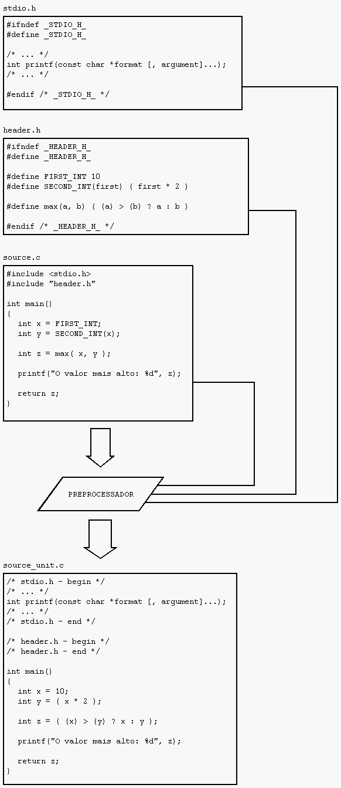Dica: quando o bicho estiver pegando, e tudo o que você sabe sobre linguagem C não estiver te ajudando a resolver um problema, tente gerar uma unidade de compilação em C e analisar sua saída. Às vezes o que é claro no código pode se tornar obscuro após o preprocessamento. Para fazer isso no VC++ em linha de comando, use o parâmetro /E.
Se você conseguir passar ileso para a fase de compilação, pode se considerar um mestre do preprocessamento. Por experiência própria, posso afirmar que a maior parte do tempo gasto corrigindo erros de compilação, por ironia do destino, não terá origem na compilação em si, mas no preprocessamento e linkedição. Isso porque o preprocessamento confunde muito o que vimos no nosso editor preferido, e a linkedição ocorre em uma fase onde não importa mais o que está dentro das funções, mas sim o escopo de nomes, um assunto um pouco mais vago do que a linguagem C.
Na compilação você irá encontrar geralmente erros bem comportados, como conversão entre tipos, else sem if e esquecimento de pontuação ou parênteses.
int cannotConvertError(const char* message)
{
int ret = message[0];
return ret;
}
int ret = cannotConvertError(3);
error C2664: 'cannotConvertError' : cannot convert parameter 1 from 'int' to 'const char *'
if( test() )
something;
something-else;
else
else-something;
error C2181: illegal else without matching if
while( (x < z) && func(x, func2(y) != 2 )
{
something;
}
error C2143: syntax error : missing ')' before '{'
Claro, não estamos falando de erros relacionados a templates, que são um pesadelo à parte.
Dica: nunca subestime o poder de informação do compilador e da sua documentação. Se o erro tem um código (geralmente tem), procure a documentação sobre o código de erro específico, para ter uma idéia de por que esse erro costuma ocorrer, exemplos de código com esse erro e possíveis soluções. Ficar batendo a cabeça não vai ajudar em nada, e com o tempo, você irá ficar sabendo rapidamente o que aconteceu.
Chegando na linkedição, onde a esperança reside, tudo pode vir por água abaixo. Isso porque você já espera confiante que tudo dê certo, quando, na verdade, um erro bem colocado pode fazer você desistir pra sempre desse negócio de programar em C.
As características mais desejadas para corrigir erros nessa fase são:
1. Total conhecimento da fase do preprocessamento
2. Total conhecimento da fase da compilação
3. Total conhecimento de níveis de escopo e assinatura de funções
Os dois primeiros itens são uma maldição previsível que deve-se carregar para todo o sempre. Se você não consegue entender o que aconteceu nas duas primeiras fases, dificilmente irá conseguir seguir adiante com essa empreitada. O terceiro item significa que deve-se levar em conta as bibliotecas que estamos usando, headers externos (com dependências externas), conflitos entre nomes, etc.
Alguns erros mais encontrados aqui são as funções não encontradas por falta da LIB certa ou por LIBs desatualizadas que não se encaixam mais com o projeto, fruto de muitas dores de cabeça de manutenção de código. Essa é a parte em que mais vale a pena saber organizar e definir uma interface clara entre os componentes de um projeto.
Do ponto de vista técnico, é a fase onde o linker junta todos os arquivos-objeto especificados, encontra as funções, métodos e classes necessárias e monta uma unidade executável, como ilustrado pela figura abaixo.
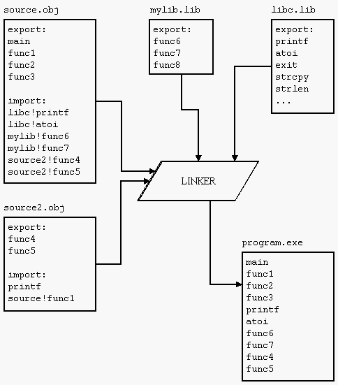Dica: uma LIB, ou biblioteca, nada mais é que uma coleção de arquivos-objeto que já foram compilados, ou seja, já passaram pelas duas primeiras fases, mas ainda não foram linkeditados. Muitas vezes é importante manter compatibilidade entre LIBs e os projetos que as usam, de forma que o processo de linkedição ocorra da maneira menos dolorosa possível.
É óbvio que, por ter passado pelas três fases de transformação de um código-fonte em um programa executável, não quer dizer que este programa está livre de erros. Os famigerados erros de lógica podem se disfarçar até o último momento da compilação e só se mostrarem quando o código estiver rodando (de preferência, no cliente).
Entre esses erros, os mais comuns costumam se aproveitar de macros, como max, que usa mais de uma vez o parâmetro, que pode ser uma chamada com uma função. A função será chamada duas vezes, mesmo que aparentemente no código a chamada seja feita uma única vez:
#define max(a, b) ( a > b ? a : b ) int z = max( func(10), 30 );
Um outro erro que já encontrei algumas vezes é quando a definição de uma classe tem um sizeof diferente do compilado em sua LIB, pela exclusão ou adição de novos membros. Isso pode (vai) fazer com que, durante a execução, a pilha seja corrompida, membros diferentes sejam acessados, entre outras traquinagens. Esses erros costumam acusar a falta de sincronismo entre os headers usados e suas reais implementações.
Enfim, na vida real, é impossível catalogar todos os erros que podem ocorrer em um fonte em C. Se isso fosse possível, ou não existiriam bugs, ou pelo menos existiria uma ferramenta para automaticamente procurar por esses erros e corrigi-los. Bom, existe o Lint.
# Configurando seus projetos no Visual Studio (Multi-threaded Debug DLL /MT,
Caloni, 2008-02-21 <computer> [up] [copy]Ao iniciar na arte da programação em C no Visual Studio eventualmente o programador irá querer testar seus programas rodando em outra máquina que não seja a de desenvolvimento, mandar uma versão beta para amigos, pra namorada e pro seu cachorro. Geralmente, por padrão, existem algumas dependências do programa compilado com uma DLL de runtime da versão do ambiente em que foi compilado o dito cujo, dificultando um pouco a distribuição do seu motherfucker-program.
Porém, seus "poroberemas se acabaram-se". Com o inovador configurador de projetos do Visual Studio, tudo o que você queria é possível, e ainda mais!
Nota do autor: isso não foi uma propaganda gratuita, apenas uma piada. Se fosse um verdadeiro anúncio das maravilhas do Visual Studio, eu agora estaria falando daquele tal código gerenciado e o tal do C++ CLI.
Inicialmente, se compilarmos um programa em Debug no Visual Studio 2005 teremos as seguintes dependências. kernel32 e msvcrx.dll (onde x é a versão do Visual Studio). A DLL kernel32 é nativa e sempre estará presente no Windows. Porém, a msvcr não. Ela veio junto com o pacote do Visual Studio, e se não for distribuída em outras máquinas, você não conseguirá rodar seu programa, pois isso gerará o erro de DLL não encontrada.
Bem, para resolver isso, a partir da IDE, temos que ir em Project, Properties, Configuration Properties, C/C++, Code Generation, Runtime Library.
Existem atualmente quatro tipos de runtime que você pode escolher:
- Multi-threaded (/MT). Versão Release que não depende de DLL.
- Multi-threaded Debug (/MTd). Versão Debug que não depende de DLL.
- Multi-threaded DLL (/MD). Versão Release que depende de DLL.
- Multi-threaded Debug DLL (/MDd). Versão Debug que depende de DLL.
Essas runtimes são chamada de multi-threaded porque antigamente existiam versões single-threaded dessas mesmas runtimes. Contudo, versões mais novas do Visual Studio só vêm com esse sabor mesmo.
Note que, por padrão, existem dois tipos de configuração em seu projeto: Debug (para testes) e Release (para distribuição). Convém não misturar configurações Debug com DLLs Release e vice-versa, a não ser que você tenha certeza do que está fazendo.
Pois bem. Para tirar a dependência da maldita DLL, tudo que temos que fazer é alterar a configuração, nesse caso Debug, de /MDd para /MTd. E recompilar.
E testar.
Além da dependência de DLLs, alguns casos especiais vão chiar por causa dos dados do manifesto embutidos no programa compilado. Por algum motivo que eu desconheço, o programa necessita que as DLLs estejam instaladas mesmo que no Dependency Walker não mostre nada. Nesses casos, uma arrancada do manifesto na versão Debug não fará mal algum.
Acho que esses são os únicos empecilhos iniciais para testar seu programa em outras máquinas. Sempre que ver o erro exibido no começo desse artigo, desconfie de alguma dependência que não está presente na máquina. Nessas horas, ter um Dependency Walker ou Dumpbin na mão vale ouro.
# Códigos de entrevista - o ponteiro nulo
Caloni, 2008-02-25 <computer> [up] [copy]Bom, parece que o "mother-fucker" wordpress ferrou com meu artigo sobre o Houaiss. Enquanto eu choro as pitangas aqui vai um outro artigo um pouco mais simples, mas igualmente interessante.
"Wanderley, tenho umas sugestões para teu blog.
A primeira:
Que tal analisar o código abaixo e dizer se compila ou não. Se não compilar, explicar porquê não compila. Se compilar, o que acontecerá e por quê."
O código é o que veremos abaixo:
#include <stdio.h>
#include <stdlib.h>
void func()
{
*(int *)0 = 0;
return 0;
}
int main(int argc, char **argv)
{
func();
return 0;
}
Bem, para testar a compilação basta compilar. Porém, se estivermos em uma entrevista, geralmente não existe nenhum compilador em um raio de uma sala de reunião senão seu próprio cérebro.
E é nessas horas que os entrevistadores testam se você tem um bom cérebro ou um bom currículo.
Por isso, vamos analisar passo a passo cada bloco de código e entender o que pode estar errado. Se não encontrarmos, iremos supor que está tudo certo.
#include <stdio.h> #include <stdlib.h>
Dois includes padrões, ultranormal, nada de errado aqui.
void func()
{
*(int *)0 = 0;
return 0;
}
Duas ressalvas aqui: a primeira quanto ao retorno da função é void, porém a função retorna um inteiro. Na linguagem C, isso funciona, no máximo um _warning_ do compilador. Em C++, isso é erro brabo de tipagem.
A segunda ressalva diz respeito à linha obscura, sintaticamente correta, mas cuja semântica iremos guardar para o final, já que ainda falta o main para analisar.a
int main(int argc, char **argv)
{
func();
return 0;
}
A clássica função inicial, nada de mais aqui. Retorna um int, e de fato retorn. Chama a função func, definida acima.
A linha que guardamos para analisar contém uma operação de casting, atribuição e deferência, sendo o casting executado primeiro, operador unário que é, seguido pelo segundo operador unário, a deferência. Como sempre, a atribuição é uma das últimas. Descomprimida a expressão dessa linha, ficamos com algo parecido com as duas linhas abaixo:
int* p = (int*) 0; *p = 0;
Não tem nada de errado em atribuir o valor 0 a um ponteiro, que é equivalente ao define NULL da biblioteca C (e C++). De acordo com a referência GNU, é recomendado o uso do define, mas nada impede utilizar o 0 "hardcoded".
Porém, estamos escrevendo em um ponteiro nulo, o que com certeza é um comportamento não-definido de conseqüências provavelmente funestas. O ponteiro nulo é um ponteiro inválido que serve apenas para marcar um ponteiro como inválido. Se escrevermos em um endereço inválido, bem, não é preciso ler o padrão para saber o que vai acontecer =)
Alguns amigos me avisaram sobre algo muito pertinente: dizer que acessar um ponteiro nulo, portanto inválido, é errado e nunca deve ser feito. Como um ponteiro nulo aponta para um endereço de memória inválido, acessá-lo irá gerar uma exceção no seu sistema operacional e fazer seu programa capotar. Um ponteiro nulo é uma maneira padrão e confiável de marcar o ponteiro como inválido, e testar isso facilmente através de um if. Mais uma vez: ponteiros nulos apontando para um endereço de memória inválido (o endereço 0) nunca devem ser acessados, apenas atribuído a ponteiros.
Em código. Isso pode:
int* p = 0; // atribuindo nulo a um ponteiro int* p2 = p; // isso também pode
Isso não pode:
*p = 15; // nunca acessar ponteiros nulos int x = *p; // isso também não pode, ler de um ponteiro nulo
Dito isso, me sinto melhor =)
# Conversor de Houaiss para Babylon - parte 1
Caloni, 2008-02-27 <computer> <projects> [up] [copy]Este artigo é sobre desmontar e montar novamente. Iremos descobrir como as entradas do dicionário Houaiss eletrônico estão gravadas em um primeiro momento, para depois remontarmos essa informação de maneira que ela possa ser usada em outro dicionário de uso mais flexível, o Babylon. Ou seja, este não é um guia de vandalismo. Estava apenas querendo usar um dicionário de qualidade excelente em outro dicionário cuja interface é muito boa.
Considero o Houaiss o melhor dicionário da atualidade, uso todo santo dia e tenho todo o respeito por ele. Possuo uma cópia legalizada exatamente por isso. Além, é óbvio, pelo escandaloso cinismo que seria se eu, desenvolvedor de software, pirateasse os que utilizo. Porém, acredito que tudo tenha um limite: respeito os direitos de quem desenvolve o programa se o programa se dá ao respeito de ser pago. Quer dizer, eu realmente uso muito esse dicionário, e ele é útil para mim. Logo, nada mais justo do que adquiri-lo como manda a lei.
Assim como adquiri o Houaiss, também comprei o Babylon, um programa-dicionário, cuja interface permite buscar o significado das palavras lidas no computador simplesmente clicando nelas. A qualidade de seu dicionário português embutido é medíocre, mas o que ele ganha mesmo é em sua interface fácil para acessar palavras. Exatamente por faltar um dicionário em português de peso no Babylon, e eu ter adquirido outro muito melhor, quis que ambos funcionassem juntos, ou seja, acesso o Babylon e tenho o resultado adicional desse meu dicionário tupiniquim.
O Babylon possui um mecanismo para criação de dicionários chamado Babylon Builder. É muito simples e fácil de usar (além de ser gratuito). Sabendo que possuo ambas as licenças desses dois programas me sinto mais aliviado em tentar desencriptar a base de dados do primeiro para construir um dicionário para o segundo, e assim realizar meu sonho de consumo: um Babylon com um dicionário de peso!
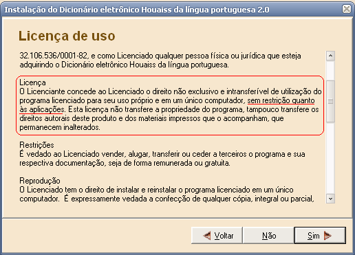É necessário que, na hora da instalação, seja escolhida a opção de copiar os arquivos para o disco. Estarei utilizando o path padrão de um Windows em português, que é "C:\Arquivos de Programas\Houaiss".
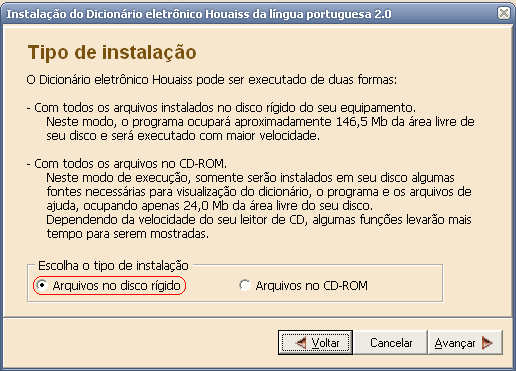A estrutura de diretórios interna da instalação é bem simples:
- Raiz. Arquivos de ajuda, desinstalador, executável principal, etc.
- Quadros. Figuras com conhecimentos gerais, como calendários, signos, línguas mais faladas, etc.
- Dicionario. Provavelmente onde está todo o dicionário, cerca de 120 MB.
Se analisarmos o conteúdo dos arquivos dentro da pasta Dicionario vamos descobrir que ele se parece com "garbage nonsense", apesar de existir um certo padrão. O padrão revela que pode se tratar de uma criptografia muito simples, talvez até um simples XOR.
for %i in (*.*) do type %i | less

Sabendo que o conteúdo do dicionário está em arquivos localizados no disco, e que teoricamente o programa não deve copiar todo o conteúdo para a memória, iremos depurar o processo do dicionário de olho nas chamadas da função ReadFile quando clicarmos em uma definição de palavra.
windbg -pn houaiss2.exe 0:001> bp kernel32!ReadFile "dd @$csp L6" $$ Dando uma olhada nos parâmetros g
Ao clicar na definição de "programa-fonte", o breakpoint é ativado:
0012fa70 0040a7a9 00000200 08bbf1d0 00000200 0012fa80 0012fa88 00000000 eax=0012fa88 ebx=00000200 ecx=00000200 edx=08bbf1d0 esi=08bbf1d0 edi=00000200 eip=7c80180e esp=0012fa70 ebp=0012facc iopl=0 nv up ei pl zr na pe nc cs=001b ss=0023 ds=0023 es=0023 fs=003b gs=0000 efl=00000246 kernel32!ReadFile: 7c80180e 6a20 push 20h $$ dados acima: $$ - O buffer de saída é 08bbf1d0 $$ - O número de bytes lidos é 200 0:000> db 08bbf1d0 L80 08bbf1d0 00 00 00 00 00 00 00 00-00 00 00 00 00 00 00 00 ................ 08bbf1e0 00 00 00 00 00 00 00 00-00 00 00 00 00 00 00 00 ................ 08bbf1f0 00 00 00 00 00 00 00 00-00 00 00 00 00 00 00 00 ................ 08bbf200 00 00 00 00 00 00 00 00-00 00 00 00 00 00 00 00 ................ 08bbf210 00 00 00 00 00 00 00 00-00 00 00 00 00 00 00 00 ................ 08bbf220 00 00 00 00 00 00 00 00-00 00 00 00 00 00 00 00 ................ 08bbf230 00 00 00 00 00 00 00 00-00 00 00 00 00 00 00 00 ................ 08bbf240 00 00 00 00 00 00 00 00-00 00 00 00 00 00 00 00 ................ 0:000> bp /1 @$ra "db 08bbf1d0 L80" 0:000> g 08bbf1d0 1f 65 67 64 5c 67 56 62-56 22 5b 64 63 69 5a 02 .egd\gVbV"[dciZ. 08bbf1e0 ff 38 68 23 62 23 02 ff-59 70 51 5e 15 68 4d 4d .8h#b#..YpQ^.hMM 08bbf1f0 72 02 ff 49 5e 63 5b 02-ff 2f 65 67 64 5c 67 56 r..I^c[../egd\gV 08bbf200 62 56 15 59 5a 15 58 64-62 65 6a 69 56 59 64 67 bV.YZ.XdbejiVYdg 08bbf210 15 5a 62 15 68 6a 56 15-5b 64 67 62 56 15 64 67 .Zb.hjV.[dgbV.dg 08bbf220 5e 5c 5e 63 56 61 21 15-56 63 64 69 56 59 64 15 ^\^cVa!.VcdiVYd. 08bbf230 65 5a 61 64 15 65 67 64-5c 67 56 62 56 59 64 67 eZad.egd\gVbVYdg 08bbf240 15 5a 62 15 6a 62 56 15-61 5e 63 5c 6a 56 5c 5a .Zb.jbV.a^c\jV\Z eax=00000001 ebx=00000200 ecx=7c801898 edx=7c90eb94 esi=08bbf1d0 edi=00000200 eip=0040a7a9 esp=0012fa88 ebp=0012facc iopl=0 nv up ei pl nz na po nc cs=001b ss=0023 ds=0023 es=0023 fs=003b gs=0000 efl=00000202 Houaiss2+0xa7a9: 0040a7a9 85c0 test eax,eax
Depois da leitura, não temos muitas alternativas a não ser fazer o tracking de chamadas até que o mesmo buffer esteja desencriptado. Esse é o caminho natural das coisas, mas poderia haver complicações secundárias, como uma cópia de buffer antes de seu uso. Estou usando passos simples porque realmente foi muito simples descobrir o segredo da ofuscação.
0:000> p
Houaiss2+0xa7ab:
0040a7ab 7507 jne Houaiss2+0xa7b4 (0040a7b4) [br=1]
0:000> p
Houaiss2+0xa7b4:
0040a7b4 8b0424 mov eax,dword ptr [esp] ss:0023:0012fa88=00000200
0:000> p
Houaiss2+0xa7b7:
0040a7b7 5a pop edx
0:000> p
Houaiss2+0xa7b8:
0040a7b8 5f pop edi
0:000> p
Houaiss2+0xa7b9:
0040a7b9 5e pop esi
0:000> p
Houaiss2+0xa7ba:
0040a7ba 5b pop ebx
0:000> p
Houaiss2+0xa7bb:
0040a7bb c3 ret
0:000> p
Houaiss2+0xb9062:
004b9062 8945f8 mov dword ptr [ebp-8],eax ss:0023:0012fac4=00000000
0:000> p
Houaiss2+0xb9065:
004b9065 0375f8 add esi,dword ptr [ebp-8] ss:0023:0012fac4=00000200
0:000> p
Houaiss2+0xb9068:
004b9068 807b1900 cmp byte ptr [ebx+19h],0 ds:0023:090cf1f9=01
0:000> p
Houaiss2+0xb906c:
004b906c 7410 je Houaiss2+0xb907e (004b907e) [br=0]
0:000> p
Houaiss2+0xb906e:
004b906e 8b4df8 mov ecx,dword ptr [ebp-8] ss:0023:0012fac4=00000200
0:000> p
Houaiss2+0xb9071:
004b9071 8b933c200300 mov edx,dword ptr [ebx+3203Ch] ds:0023:0910121c=00000000
0:000> p
Houaiss2+0xb9077:
004b9077 8bc3 mov eax,ebx
0:000> p
Houaiss2+0xb9079:
004b9079 e8eef9ffff call Houaiss2+0xb8a6c (004b8a6c)
0:000> p
Houaiss2+0xb9
0:000> db 08bbf1d0 L80
08bbf1d0 2a 70 72 6f 67 72 61 6d-61 2d 66 6f 6e 74 65 0d *programa-fonte.
08bbf1e0 0a 43 73 2e 6d 2e 0d 0a-64 7b 5c 69 20 73 58 58 .Cs.m...d{\i sXX
08bbf1f0 7d 0d 0a 54 69 6e 66 0d-0a 3a 70 72 6f 67 72 61 }..Tinf..:progra
08bbf200 6d 61 20 64 65 20 63 6f-6d 70 75 74 61 64 6f 72 ma de computador
08bbf210 20 65 6d 20 73 75 61 20-66 6f 72 6d 61 20 6f 72 em sua forma or
08bbf220 69 67 69 6e 61 6c 2c 20-61 6e 6f 74 61 64 6f 20 iginal, anotado
08bbf230 70 65 6c 6f 20 70 72 6f-67 72 61 6d 61 64 6f 72 pelo programador
08bbf240 20 65 6d 20 75 6d 61 20-6c 69 6e 67 75 61 67 65 em uma linguage
Pois bem. Logo depois de chamar a função Houaiss2+0xb8a6c magicamente o buffer incompreensível se transformou no início da definição da palavra "programa-fonte". Como não temos o programa-fonte do Houaiss, teremos que descer mais um nível no "assemblão", mesmo. Note que a saída abaixo se repete porque reexecutei os passos anteriores para cair na mesma condição.
Houaiss2+0xb9079: 004b9079 e8eef9ffff call Houaiss2+0xb8a6c (004b8a6c) 0:000> t eax=08bbf1a0 ebx=08bbf1a0 ecx=00000200 edx=00000000 esi=00000200 edi=02fe8661 eip=004b8a6c esp=0012fa98 ebp=0012facc iopl=0 nv up ei pl nz na po nc cs=001b ss=0023 ds=0023 es=0023 fs=003b gs=0000 efl=00000202 Houaiss2+0xb8a6c: 004b8a6c 53 push ebx 0:000> p eax=08bbf1a0 ebx=08bbf1a0 ecx=00000200 edx=00000000 esi=00000200 edi=02fe8661 eip=004b8a6d esp=0012fa94 ebp=0012facc iopl=0 nv up ei pl nz na po nc cs=001b ss=0023 ds=0023 es=0023 fs=003b gs=0000 efl=00000202 Houaiss2+0xb8a6d: 004b8a6d 03ca add ecx,edx 0:000> p eax=08bbf1a0 ebx=08bbf1a0 ecx=00000200 edx=00000000 esi=00000200 edi=02fe8661 eip=004b8a6f esp=0012fa94 ebp=0012facc iopl=0 nv up ei pl nz na pe nc cs=001b ss=0023 ds=0023 es=0023 fs=003b gs=0000 efl=00000206 Houaiss2+0xb8a6f: 004b8a6f 49 dec ecx 0:000> p eax=08bbf1a0 ebx=08bbf1a0 ecx=000001ff edx=00000000 esi=00000200 edi=02fe8661 eip=004b8a70 esp=0012fa94 ebp=0012facc iopl=0 nv up ei pl nz ac pe nc cs=001b ss=0023 ds=0023 es=0023 fs=003b gs=0000 efl=00000216 Houaiss2+0xb8a70: 004b8a70 2bca sub ecx,edx 0:000> p eax=08bbf1a0 ebx=08bbf1a0 ecx=000001ff edx=00000000 esi=00000200 edi=02fe8661 eip=004b8a72 esp=0012fa94 ebp=0012facc iopl=0 nv up ei pl nz na pe nc cs=001b ss=0023 ds=0023 es=0023 fs=003b gs=0000 efl=00000206 Houaiss2+0xb8a72: 004b8a72 7c12 jl Houaiss2+0xb8a86 (004b8a86) [br=0] 0:000> p eax=08bbf1a0 ebx=08bbf1a0 ecx=000001ff edx=00000000 esi=00000200 edi=02fe8661 eip=004b8a74 esp=0012fa94 ebp=0012facc iopl=0 nv up ei pl nz na pe nc cs=001b ss=0023 ds=0023 es=0023 fs=003b gs=0000 efl=00000206 Houaiss2+0xb8a74: 004b8a74 41 inc ecx 0:000> p eax=08bbf1a0 ebx=08bbf1a0 ecx=00000200 edx=00000000 esi=00000200 edi=02fe8661 eip=004b8a75 esp=0012fa94 ebp=0012facc iopl=0 nv up ei pl nz ac pe nc cs=001b ss=0023 ds=0023 es=0023 fs=003b gs=0000 efl=00000216 Houaiss2+0xb8a75: 004b8a75 33db xor ebx,ebx 0:000> p eax=08bbf1a0 ebx=00000000 ecx=00000200 edx=00000000 esi=00000200 edi=02fe8661 eip=004b8a77 esp=0012fa94 ebp=0012facc iopl=0 nv up ei pl zr na pe nc cs=001b ss=0023 ds=0023 es=0023 fs=003b gs=0000 efl=00000246 Houaiss2+0xb8a77: 004b8a77 8a5c1030 mov bl,byte ptr [eax+edx+30h] ds:0023:08bbf1d0=1f 0:000> p eax=08bbf1a0 ebx=0000001f ecx=00000200 edx=00000000 esi=00000200 edi=02fe8661 eip=004b8a7b esp=0012fa94 ebp=0012facc iopl=0 nv up ei pl zr na pe nc cs=001b ss=0023 ds=0023 es=0023 fs=003b gs=0000 efl=00000246 Houaiss2+0xb8a7b: 004b8a7b 83c30b add ebx,0Bh 0:000> p eax=08bbf1a0 ebx=0000002a ecx=00000200 edx=00000000 esi=00000200 edi=02fe8661 eip=004b8a7e esp=0012fa94 ebp=0012facc iopl=0 nv up ei pl nz ac po nc cs=001b ss=0023 ds=0023 es=0023 fs=003b gs=0000 efl=00000212 Houaiss2+0xb8a7e: 004b8a7e 885c1030 mov byte ptr [eax+edx+30h],bl ds:0023:08bbf1d0=1f 0:000> p eax=08bbf1a0 ebx=0000002a ecx=00000200 edx=00000000 esi=00000200 edi=02fe8661 eip=004b8a82 esp=0012fa94 ebp=0012facc iopl=0 nv up ei pl nz ac po nc cs=001b ss=0023 ds=0023 es=0023 fs=003b gs=0000 efl=00000212 Houaiss2+0xb8a82: 004b8a82 42 inc edx 0:000> p eax=08bbf1a0 ebx=0000002a ecx=00000200 edx=00000001 esi=00000200 edi=02fe8661 eip=004b8a83 esp=0012fa94 ebp=0012facc iopl=0 nv up ei pl nz na po nc cs=001b ss=0023 ds=0023 es=0023 fs=003b gs=0000 efl=00000202 Houaiss2+0xb8a83: 004b8a83 49 dec ecx 0:000> p eax=08bbf1a0 ebx=0000002a ecx=000001ff edx=00000001 esi=00000200 edi=02fe8661 eip=004b8a84 esp=0012fa94 ebp=0012facc iopl=0 nv up ei pl nz ac pe nc cs=001b ss=0023 ds=0023 es=0023 fs=003b gs=0000 efl=00000216 Houaiss2+0xb8a84: 004b8a84 75ef jne Houaiss2+0xb8a75 (004b8a75) [br=1] 0:000> p eax=08bbf1a0 ebx=0000002a ecx=000001ff edx=00000001 esi=00000200 edi=02fe8661 eip=004b8a75 esp=0012fa94 ebp=0012facc iopl=0 nv up ei pl nz ac pe nc cs=001b ss=0023 ds=0023 es=0023 fs=003b gs=0000 efl=00000216 Houaiss2+0xb8a75: 004b8a75 33db xor ebx,ebx ...
Estamos diante de um loop, que, ao analisar o valor de ecx, sabemos que se repete 0x200 vezes, que é exatamente o número de bytes lidos pela função ReadFile. Coincidência? Seria, se não estivesse bem no meio do loop a referência ao próprio buffer usado na leitura (08bbf1d0).
Acredito que para todo profissional de engenharia reversa a parte mais emocionante é a descoberta do grande segredo por trás do desafio, o porquê das coisas estarem como estão e o que fazer para desfazer a mágica da segurança: a chave!
Houaiss2+0xb8a7b: 004b8a7b 83c30b add ebx,0Bh
Note que essa operação é realizada para cada byte lido do buffer usado na leitura do arquivo. Conseqüentemente, não é difícil de imaginar que o valor 0x0B é a chave usada para ofuscar o dicionário em arquivo, subtraindo esse valor de cada byte. Para desfazer a ofuscação, portanto, basta adicionar novamente o mesmo valor, que é exatamente o que faz a instrução assembly acima, e o meu singelo código de desofuscação do dicionário Houaiss abaixo:
#define _CRT_SECURE_NO_DEPRECATE
#include <windows.h>
#include <stdio.h>
//#define HOUAISS_PATH "C:\\Projects\\Temp\\HouaissReader\\Houaiss\\"
int WINAPI WinMain(HINSTANCE, HINSTANCE, PSTR cmdLine, int)
{
CHAR HOUAISS_PATH[MAX_PATH] = { };
sscanf(cmdLine, "-p \"%[^\"]s", HOUAISS_PATH);
if( HOUAISS_PATH[0] == 0 )
{
MessageBox(NULL, "How to use:\r\nHouCalc.exe -p \"C:\\HouaissPath\\\"",
"Houaiss Decipher v. alpha", 0);
return 0;
}
for( int fileIdx = 1; fileIdx < 64; ++fileIdx )
{
CHAR path1[MAX_PATH];
CHAR path2[MAX_PATH];
sprintf(path1, "%sdeah%03d.dhx", HOUAISS_PATH, fileIdx);
sprintf(path2, "%sdeah%03d.txt", HOUAISS_PATH, fileIdx);
HANDLE file1 = CreateFile(path1, GENERIC_READ, FILE_SHARE_READ,
NULL, OPEN_EXISTING, 0, NULL);
HANDLE file2 = CreateFile(path2, GENERIC_READ | GENERIC_WRITE, 0,
NULL, CREATE_ALWAYS, 0, NULL);
if( file1 != INVALID_HANDLE_VALUE && file2 != INVALID_HANDLE_VALUE )
{
DWORD fileSize = GetFileSize(file1, NULL);
if( SetFilePointer(file2, fileSize, NULL, FILE_BEGIN) )
{
SetEndOfFile(file2);
HANDLE map1 = CreateFileMapping(file1, NULL, PAGE_READONLY, 0, 0, NULL);
HANDLE map2 = CreateFileMapping(file2, NULL, PAGE_READWRITE, 0, 0, NULL);
if( map1 && map2 )
{
PBYTE view1 = (PBYTE) MapViewOfFile(map1, FILE_MAP_READ, 0, 0, 0);
PBYTE view2 = (PBYTE) MapViewOfFile(map2, FILE_MAP_WRITE, 0, 0, 0);
if( view1 && view2 )
{
for( DWORD i = 0; i < fileSize; ++i )
{
view2[i] = view1[i] + 0x0B;
}
}
if( view1 )
UnmapViewOfFile(view1);
if( view2 )
UnmapViewOfFile(view2);
}
if( map1 )
CloseHandle(map1);
if( map2 )
CloseHandle(map2);
}
}
if( file1 )
CloseHandle(file1);
if( file2 )
CloseHandle(file2);
}
return 0;
}
Parte da mágica já foi feita, talvez a mais importante e divertida. Daqui pra lá deixaremos o WinDbg de lado e analisaremos o formato em que o texto do dicionário é armazenado, ignorando sua ofuscação básica, que não é mais um problema. Como o artigo já está extenso o suficiente, vou deixar a continuação dessa empreitada para uma futura publicação.
# Quando o ponteiro nulo não é inválido
Caloni, 2008-02-29 <computer> [up] [copy]Existe coisa mais prazerosa do que admitir um erro que foi cometido na mesma semana? Existe: quando você sabia que estava certo, mas resolveu usar o senso comum por falta de provas.
Pois bem. O mesmo amigo que me recomendou que escrevesse sobre o assunto do ponteiro nulo achou um livro sobre armadilhas em C com um exemplo que demonstra exatamente o contrário: dependendo da plataforma, ponteiros nulos são sim válidos.
Nesse caso, se tratava de um programa que iria rodar em um microprocessador, daqueles que o DQ costuma programar. Pois bem. Quando o dito cujo ligava era necessário chamar uma rotina que estava localizada exatamente no endereço 0. Para fazer isso, o código era o seguinte:
( * (void(*)()) 0 ) ();
Nada mais simples: um cast do endereço 0 (apesar de normalmente inválido, 0 pode ser convertido para endereço) para ponteiro de função que não recebe parâmetros e não retorna nada, seguido de deferência ("o apontado de") e chamada (a dupla final de parênteses). A linha acima é o equivalente às linhas abaixo:
typedef void (*func_t)(); func_t func = (func_t) 0; func();
É bem o que o autor diz depois de jogar esta expressão: "expressions like these strike terror into the hearts of C programmers". É lógico que isso não é bem verdade para as pessoas que acompanham este blogue =)
[2008-01] [2008-03]